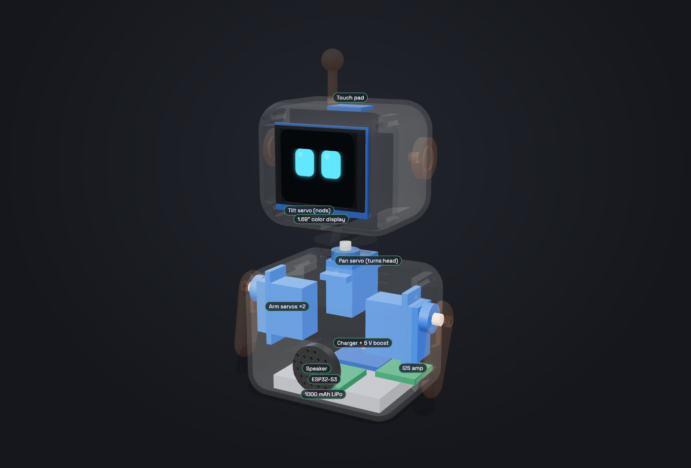

How to connect every part, solder it, check it works, fit it inside the shell, and what to do when something doesn't work. No electronics experience needed. Test each part before you add the next one.
Solder somewhere with fresh air, and wash your hands afterwards if you used leaded solder.
Pip has two halves: a power side (battery → charger → switch → 5 V for everything) and a signal side (the ESP32 talking to each part). Every part shares the same GND. That matters: a part without GND won't work even if everything else looks right.
| Part | Part's pin | Connects to |
|---|---|---|
| Battery | red + | IP5306 B+ (or BAT+) |
| black − | IP5306 B− | |
| IP5306 | 5V OUT + | Switch middle pin → switch side pin → 5 V rail |
5V OUT − | GND rail | |
| ESP32-S3 | 5V | 5 V rail |
GND | GND rail | |
3V3 | Display VCC, Touch VCC | |
| Display | VCC / GND | ESP32 3V3 / GND |
SCL | GPIO 12 | |
SDA | GPIO 11 | |
CS | GPIO 10 | |
DC | GPIO 9 | |
RES | GPIO 8 | |
BLK | GPIO 7 (backlight) | |
| Servos (×4) | brown / red | GND rail / 5 V rail (through the servo hub) |
| orange (signal) | Pan → GPIO 1 · Tilt → GPIO 2 · Left arm → GPIO 3 · Right arm → GPIO 4 | |
| Amp | VIN / GND | 5 V rail / GND rail |
BCLK · LRC · DIN | GPIO 5 · GPIO 6 · GPIO 13 | |
Speaker + − | Speaker's two wires (either way round) | |
| Touch | VCC · GND · I/O | ESP32 3V3 · GND · GPIO 44 (marked RX on some boards) |
https://espressif.github.io/arduino-esp32/package_esp32_index.jsonfirmware/tests/. Each folder has its own pins.h with the pin numbers from the table above.LED_BUILTIN to 48, and upload. The small LED on the board should flash.
If the board doesn't show up: hold the BOOT button, plug it in, let go, then upload again.Do steps A–D on a breadboard first, with jumper wires. Solder only once each part works. That way, if something breaks, you know which part caused it.
01_display.B+ / B− pads. One wire at a time, red to +.5V OUT + to the switch's middle pin. Another red wire from a side pin of the switch becomes your 5 V rail.5V OUT − becomes your GND rail.Four servos all need 5 V and GND, so make a tiny board that shares them out:
02_servosUpload it, unplug the USB cable, then switch Pip on. All 4 servos turn to their middle position (90°) and hold. Now fit the horns, pointing straight ahead for the neck and straight down for the arms. Then set CENTER_ONLY = false and upload again: each servo wiggles in turn.VIN → 5 V rail, GND → GND rail. BCLK, LRC, DIN → GPIO 5, 6, 13. Leave GAIN and SD unconnected.+ and − screw/pads.04_soundA happy "bee-doo!" chirp every 2 seconds.VCC → 3V3, GND → GND, I/O → GPIO 44.03_touchOpen the Serial Monitor (115200). Touch the pad: it prints "touched!". Then hold the pad against the inside of the printed head and touch the outside: it should still work through the plastic.The display, touch pad and tilt servo all live in the head, and their wires pass through the neck. That's 12 wires:
| Wire | For |
|---|---|
| 3V3, GND | display + touch (shared) |
| SCL, SDA, CS, DC, RES, BLK | display |
| I/O | touch |
| 5 V, GND, signal | tilt servo |

Always start with the two most common causes: a missing GND connection and a loose or cold solder joint (dull and lumpy instead of shiny). Wiggle wires gently while it's running: if things flicker, you've found the bad one.
| What you see | Likely cause | Fix |
|---|---|---|
| Screen completely black | Backlight off, or VCC/GND missing | Check BLK → GPIO 7 and VCC → 3V3. Measure 3.3 V between VCC and GND on the display. |
| Backlight on, but nothing drawn | Data wires swapped or loose | Check SCL → 12 and SDA → 11 (easy to swap). Re-check CS, DC, RES. |
| Picture shifted, with a stripe of noise on one side | Wrong offset for your panel | In 01_display change the four 0, 20, 0, 20 numbers to 20, 0, 20, 0. |
| Colors look inverted (black is white) | Panel is not IPS | Change true to false in the Arduino_ST7789(...) line. |
| Picture sideways | Rotation | Try rotation 3 instead of 1. |
| What you see | Likely cause | Fix |
|---|---|---|
| Nothing turns on | IP5306 asleep, or battery empty | Short-press the IP5306 button, or plug in USB-C. Measure the battery: below 3.3 V it needs charging. |
| Pip switches itself off after ~30 seconds | The IP5306 sleeps when it thinks nothing is connected (load under ~50 mA) | Keep the screen backlight on, since it draws enough current to keep the IP5306 awake. If it still happens, buy an IP5306 board marked "always on", or use a TP4056 charger + MT3608 boost pair instead. |
| ESP32 restarts when servos move | Voltage drops when servos start | Check the 1000 µF capacitor is there and the right way round. Use thicker wires (24 AWG) for the 5 V and GND rails. Charge the battery. |
| Something gets hot or smells | Short circuit or reversed wire | Switch off and unplug immediately. Look for solder bridges between pins and check every red/black wire with the multimeter (continuity mode beeps when two points are connected). |
| Battery looks puffy | Damaged cell | Stop using it. Don't puncture it. Take it to an e-waste or battery recycling point. |
| What you see | Likely cause | Fix |
|---|---|---|
| Servo doesn't move at all | No 5 V, no GND, or wrong signal pin | Measure 5 V on the hub. Check the plug isn't reversed (brown = GND). Try that servo on another hub row. |
| Servo buzzes or shakes when still | Pushing against the shell, or a noisy signal | Re-centre with 02_servos and refit the horn so it isn't pressing on anything. In your own code, call detach() on a servo when it is resting. |
| Head or arm moves the wrong way | Servo mounted the other way round | No rewiring needed: it's flipped in software (change angle to 180 − angle). |
| Head doesn't point straight at 90° | Horn fitted one tooth off | Run 02_servos (it holds 90°), take the horn off and push it back on straight. |
| Servo stopped working after a crash | Stripped plastic gears | Replace the SG90 (they're cheap) or use an MG90S (metal gears, same size). |
| What you see | Likely cause | Fix |
|---|---|---|
| No sound | I2S wires swapped, or speaker not connected | Check BCLK → 5, LRC → 6, DIN → 13. Check the amp has 5 V. |
| Crackling while servos move | Electrical noise on the 5 V rail | Keep the amp wires short and away from servo wires. Add a 100 µF capacitor at the amp's VIN. |
| Touch always "on" or never responds | It calibrated while being touched, or the plastic is too thick | Switch off and on without touching it. Glue it flat against the plastic with no air gap. Stick a 2 × 2 cm piece of aluminium foil to its pad to make it bigger. |
| Computer doesn't see the board | Charge-only USB cable, or board in a bad state | Try another cable. Hold BOOT, plug in, release, then upload. |
| Uploads, but Serial Monitor is empty | USB CDC is off | Tools → USB CDC On Boot → Enabled, then upload again. |
| Head can't turn fully, or wires tug | Head cable too short or too stiff | Lengthen the loop, use silicone wire. Never force the head by hand while it's powered. |